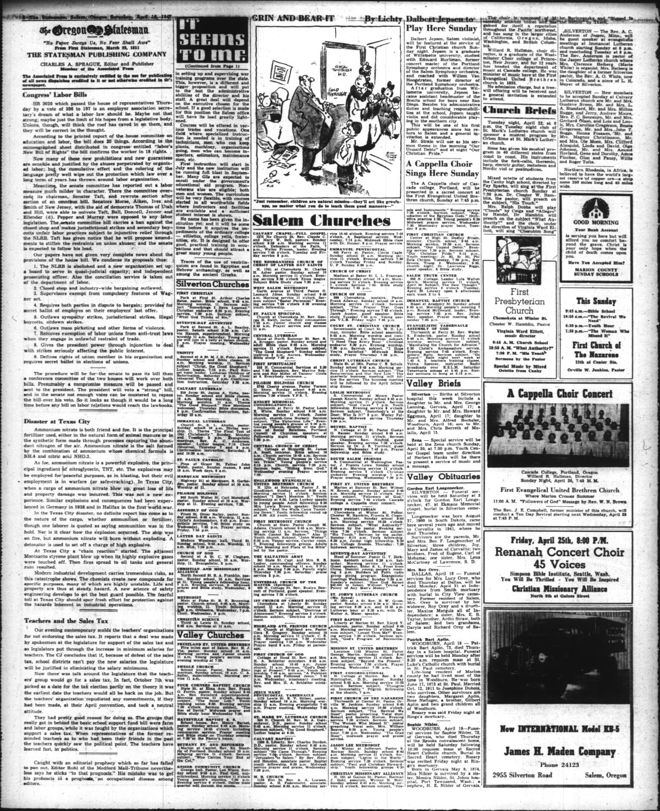
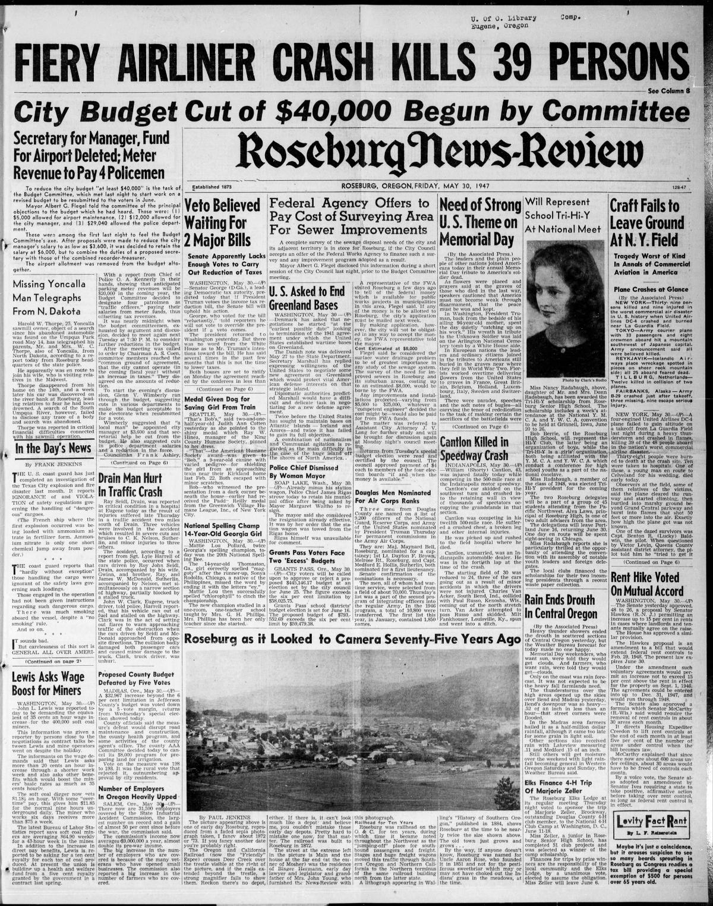

HN HN-563 · April 17, 1947 · Science, Invention & Technology > Physics, Chemistry & Material Sciences > Chemical discoveries
Source: Indianapolis Times, p. 2 — original page; Texas State Historical Association, cargo and sequence.
Report: “Usually Harmless Fertilizer Touches Off Texas Disaster†identified ammonium nitrate in the French ship's hold and explained how material sold for agriculture can also support extremely powerful explosions.
Assessment: Identification of the cargo was a meaningful early lead; it does not mean all causes, cargo-handling decisions, ignition circumstances, and legal responsibilities were settled on April 17. The official historical chronology records subsequent fires, the second ship explosion, and prolonged compensation litigation.
Authentic images retrieved from Historic Oregon Newspapers (University of Oregon). Article crops are located using the archive's own OCR word coordinates and rendered at native crop resolution; article clips are assembled from the archive's own article-block images; page scans are reduced-size access renditions. No images were generated, mocked, or retouched.


Not yet acquired. Queued for provider-specific acquisition testing (see source-acquisition manifest).
URL (preserved verbatim): https://newspapers.library.in.gov/?a=d&d=IPT19470417.1.2
Saved research report: Historical_Newspaper_Event_Research_553-577_2026-10-23.md
Evidence note: A newspaper report means a historical publication made a claim; it does not establish that claim as fact. Contemporary reporting is separated from later scholarly context and our own assessment.